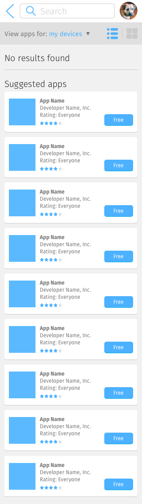
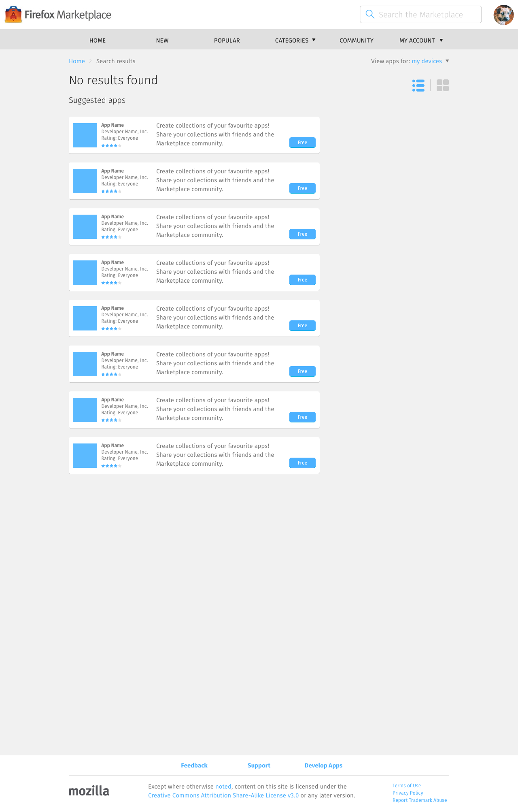

<div class="container">
	<div class="row">
		<div class="col-sm-12 col-md-12 col-lg-12">
			<h1>Search Results &rarr; Empty</h1>
      
      
      
      
       
      
      
      <p class="longText">When the <a href="search.html">search interface</a> – designed to minimise errors – failed to produce a search query, the empty results page should:</p>
      
      <ol class="longText">
        <li>Say “No results found”.</li>
        <li>On the Keyboard layout, automatically focus on the search bar so user can start typing straight away. On Mobile and Tablet layouts, highlighting the bar will pop open the keyboard, stealing away space, so it’s less ideal to do this.</li>
        <li>Display 8 suggested apps that have good association scores when compared against the search query, instead of 8 random apps, 8 popular apps, or 8 new apps.</li>
      </ol>
      
      <p class="longText">Rather than relying on user to input good keywords, we should instead design a good <a href="search.html">search interface</a>. Doing so will minimise the appearance of this zero-result page.</p>

		</div>
	</div>
	<!-- Pagination. If you have more than one page, set the multipage variable in the Frontmatter to true. Editing the pagination code happens in /_includes/homePagination.html.
		NOTE: This is currently broken in the Jekyll ver of this template.
		-->
		{% if page.multipage %}
			{% include homePagination.html %}
		{% endif %}
